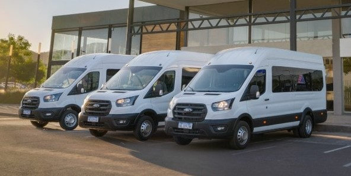
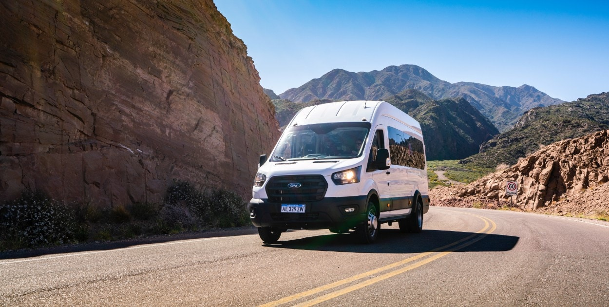

VIAJES RUTA 2
El servicio que necesitás
Traslados diarios de ida y vuelta hacia Buenos Aires, La Plata, Mar del Plata desde localidades de la Autovía 2. Viajes personalizados a todo el país.
Saber MásNUESTRA FLOTA
Contamos con minibuses de última generación seguros y confortables. Todas las unidades cuentan con calefacción, aire acondicionado, wi-fi a bordo y choferes profesionales.
MásSERVICIOS

Frecuencias diarias a Buenos Aires, La Plata y Mar del Plata. Traslados hacia aeropuertos. Servicios charter a recitales y fiestas populares. Escapadas turísticas de fin de semana . Alquiler de unidades con chofer.
MásTURISMO
Asesoramiento turístico para la organización de viajes individuales o grupales de corta duración a los principales destinos turísticos de la República Argentina, con traslado en unidades propias y convenios con hoteles.
Más